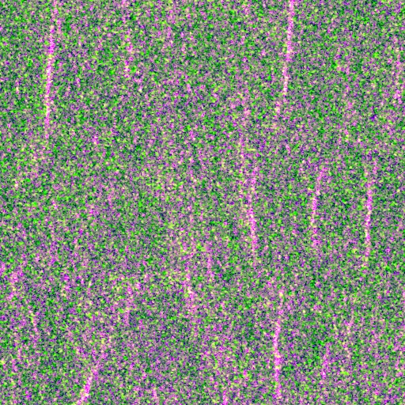

Benchmark / Lossless / s1-grd-iw-2 / s1-grd-iw-2-35
s1-grd-iw-2-35
karakum · 2023-01-03 · sample details

Metadata
| id | s1-grd-iw-2-35 |
|---|---|
| source | COPERNICUS/S1_GRD_FLOAT (Sentinel-1 GRD IW, Earth Engine preprocessing) |
| asset | COPERNICUS/S1_GRD_FLOAT/S1A_IW_GRDH_1SDV_20230103T021139_20230103T021204_046613_059628_2D13 |
| crs | EPSG:32640 |
| transform | 712645.6755304527 10.0 0.0 4378151.18720838 0.0 -10.0 |
| datetime_start | 2023-01-03T02:11:39.000Z |
| datetime_end | 2023-01-03T02:11:39.000Z |
| bands | VV|VH |
| shape | 2x512x512 |
| dtype | float32 |
| unit | sigma0 (linear) |
| scale | 1 |
| offset | 0 |
| input_sha256 | 2e9aba4bf88116ccd9b2d779b0975296071d34ace5b8da43e0fb3c0cb7b535fd |
| site | karakum |
| regime | bare |
| lon | 59.503 |
| lat | 39.503 |
| orbit_pass | DESCENDING |
| relative_orbit | 166 |